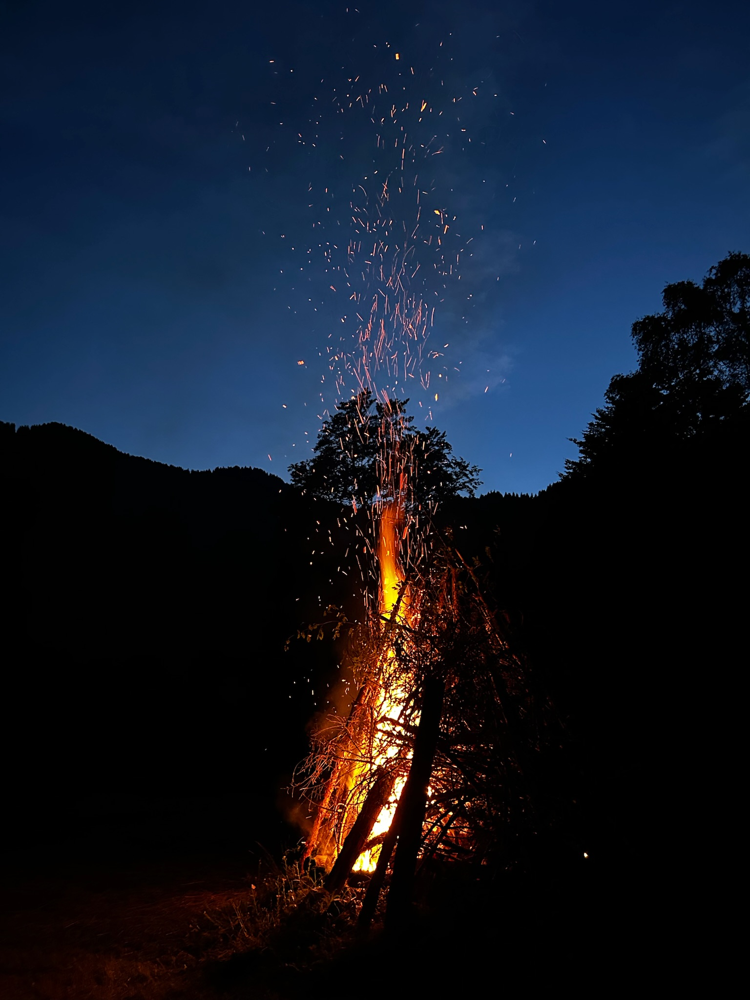
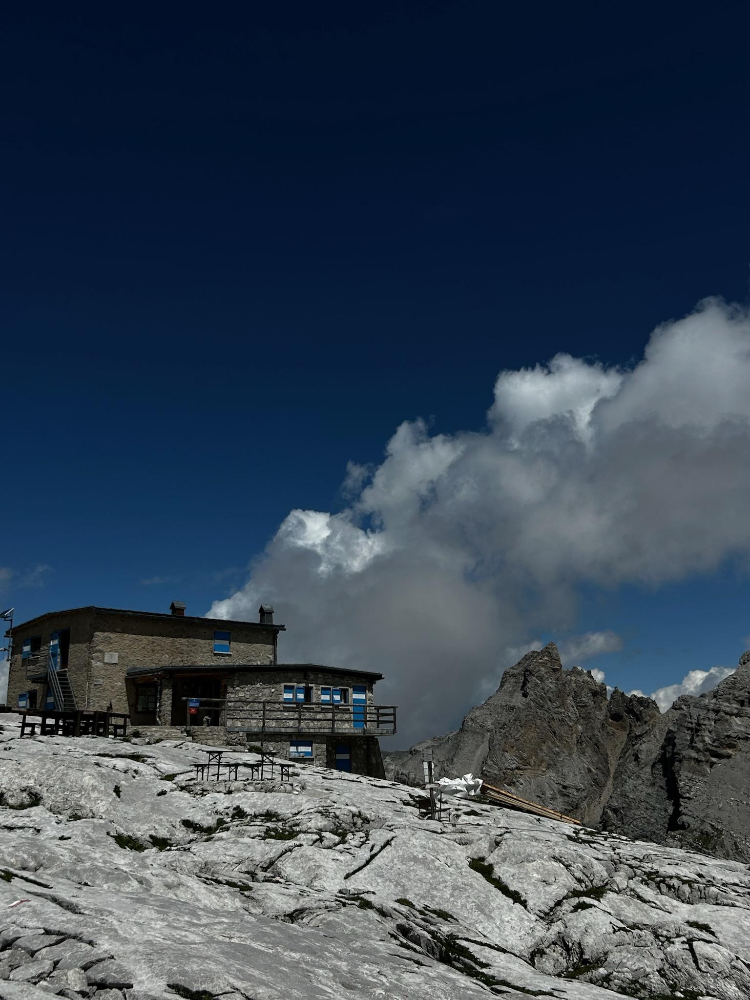

La Val d’Algone è un luogo che invita a rallentare, respirare profondamente e riconnettersi con la natura. Qui, tra boschi profumati e silenzi profondi, puoi vivere esperienze autentiche a contatto con l’ambiente incontaminato del Parco Naturale Adamello Brenta:
Dopo il tramonto, non c’è niente di meglio che radunarsi attorno a un falò (nelle aree consentite),cucinare qualcosa di semplice, condividere storie e lasciarsi scaldare dal fuoco e dall’atmosfera.
Lontano dalla frenesia, potrai piantare la tenda in aree dedicate e dormire circondato dal canto dei grilli e dal fruscio degli alberi. Un cielo limpido e costellato rende ogni notte magica.
Che tu sia un camminatore esperto o un amante delle passeggiate tranquille, la valle offre sentieri immersi nella natura, panorami sulle Dolomiti di Brenta e itinerari che portano a rifugi accoglienti o piccoli laghetti alpini.
| Partenza | Difficoltà | Dislivello | Arrivo | Raccomandazioni |
|---|---|---|---|---|
| Malga Movlina | 7/10 | 834 | Rifugio dodici apostoli | Scarpe comode, vestirsi adeguatamente, kit medico |
| Rifugio Brenta | 1/10 | 127 | Malva Stablei | Scarpe comode |
Con un po’ di pazienza e rispetto, è possibile avvistare
La Val d’Algone è perfetta anche per le famiglie e per chi cerca un turismo lento: laboratori nei masi, passeggiate guidate, osservazione delle stelle e momenti di puro relax a contatto con il bosco.